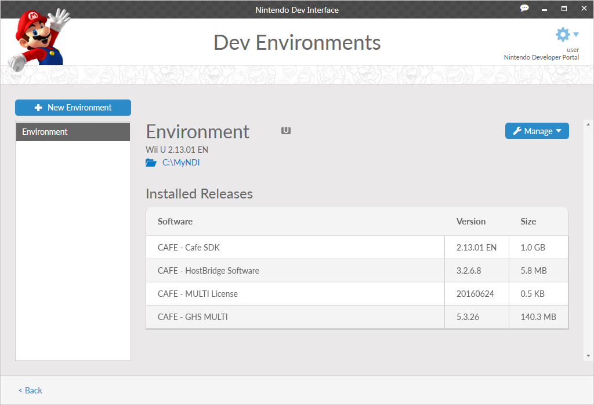
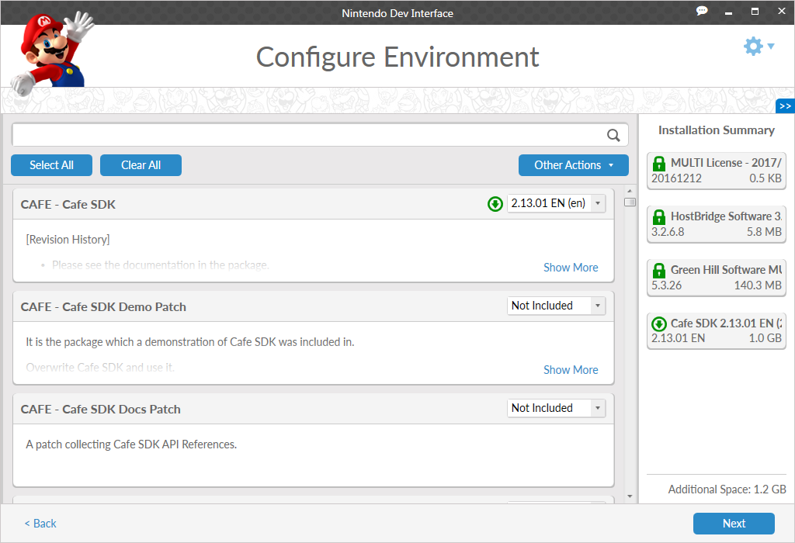
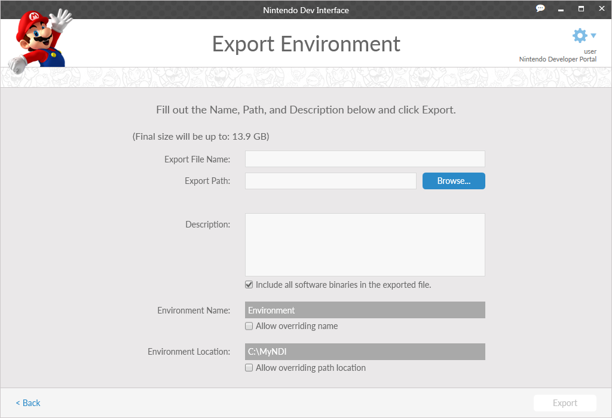

This screen is used to view information about environments that you have previously created using NDI. In addition, you may create new environments and perform other actions related to installed environments. Information about performing each of these options is covered later in this section.
Click the New Environment button to begin the process of creating a new environment, as detailed in the Development Environments Tool section.
The environment list on the left displays all environments currently installed to your system. Select an environment to display information about that environment on the right. The key details of an environment are:
Click the blue folder icon, under the environment name, to open the file location for the selected environment.
Many times, after you create an environment, new versions of the packages that you initially installed will become available. When this occurs, the following icon is displayed, adjacent to the name of the environment.
For more information about updating environments, refer to the Update section below.
Dashboard Groups are installed with specific packages and enable quick access to particular functions, such as updating hardware, opening specific programs, or installing additional packages.
Dashboard functions that you might regularly use, can be selected as favorites, adding them to the Welcome screen for ease of access. To favorite a dashboard function, click the star icon to the right of the desired selection.
Once a favorite has been added, it is displayed in a new tool on the Welcome screen. To remove a favorite, click the star icon next to it.
The Manage button is visible in the upper right of the screen.
Click the Manage button to access a drop-down list box with the following options.

Select Manage Details to open the Configure Environment screen. This screen allows you to make modifications to specific packages you have installed, or install additional packages to your environment. For more information, see the Environment Configuration section.
From the manage menu, select Open in Explorer to open a new Explorer window at the system location for the environment.
From the manage menu, select Delete to remove the selected environment from your system. After the environment is deleted, if there are no other environments on your system, you will also be asked if you want to remove all remaining Global Packages from your system.
Global Packages are software packages that are only installed one time, but can be used by all environments on your system.

From the manage menu, select Export to create a MegaZarf file from the selected environment. An exported MegaZarf file contains all the information required for any instance of NDI to recreate the environment.
The approximate file size of the of the MegaZarf will be displayed at the top of the screen. Please ensure that you have sufficient space to create the file.
To create a MegaZarf, the following information must be provided.
If you select Update from the manage menu, it causes the selected environment to update to the latest versions of packages that are currently installed, if any. This opens a window that lists all available updates for installed packages, and the total file size of the packages that will be downloaded and installed.
If updates are available for an environment, all indicated software packages will be installed. When updating in this manner, there is no method to choose individual updates to perform.
Click the Update button to install the new versions of the software to the environment. This may take several minutes, depending on the size and number of updates required.
Instead, you may perform updates on individual packages. To do so, go to the Manage Details screen (by selecting the Manage Details option from the manage menu), then make individual selections. For more information, see the Manage Details section.
From the manage menu, the Set as Default option displays differently depending on which platforms the foundation in the environment supports. If an environment supports multiple platforms, an individual Set as Default option will be displayed for each platform.
Selecting this option for an environment causes it to be the default environment for software that interacts with the indicated platform. Additionally, selecting this option for an environment makes it the default SDK path for use in the NDI command-line interface. For more information, see the NDI Command-line documentation.
You may also remove this default setting by selecting the Clear as Default option, which replaces Set as Default in the menu for default environments. Note: Only a single environment can be set as default for a given platform.
From the manage menu, select Environment Information to display all information about the environment in a format that may be selected for copy and paste operations. This is the same information available in other areas of the application, collected into one location for easy access.
CONFIDENTIAL